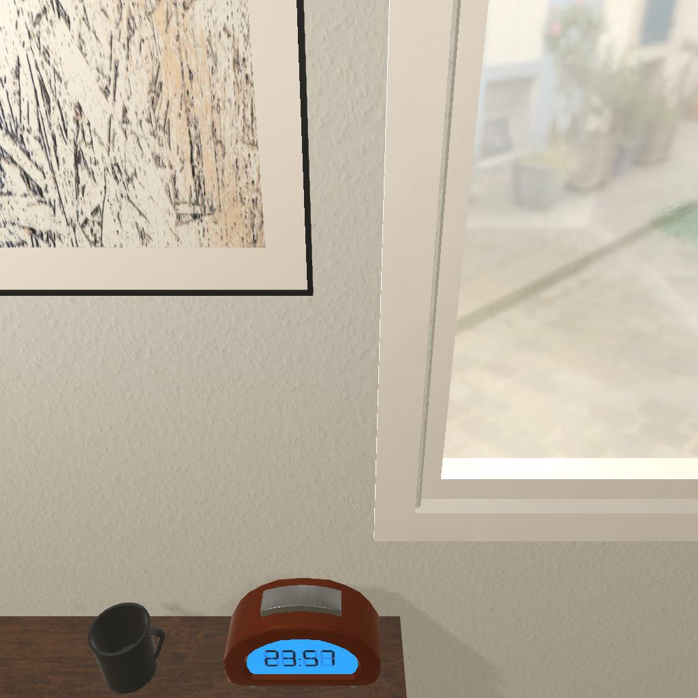
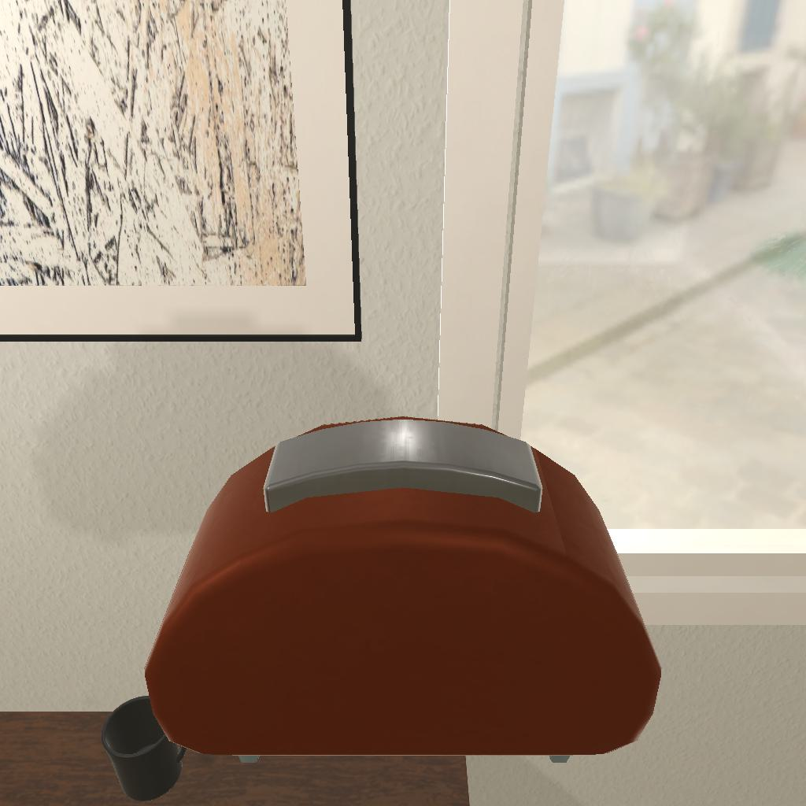

---------------------------------------------------------task: 1---------------------------------------------------------
--------------------------------------------------------------------------------------------------------------------------------------------------------------------
--------------------------------------------------------------------------------------------------------------------------------------------------------------------
Step:--------------------------------------------------------------------------4-------------------------------------------------------------------------------
----------------------------------------
VLM Prompt:
Image1:
Image2:
Image3:
**Instruction**
1. Analyze the provided images to identify all visible household objects and compare the difference between images (e.h. whether the object is opened or not and taken on hand or not), focusing on those relevant to the task description "examine the alarmclock with the desklamp."
2. Use the analysis of images and the task hint "The agent must find an object of the desired type, locate and turn on a light source with the desired object in-hand." to answer the question: what is the most reasonable action in the choices for the task description "examine the alarmclock with the desklamp"?
3. Decide and write the answer using the template: The answer is: (i): , where i is the real number. If there is no desired object in images, search every place based on **Initial Observation** to find the object. And if no one is exactly correct, choose a similar answer.
**Initial Observation**
You are in the middle of a room. Looking quickly around you, you can see bed (1), dresser (1), drawer (1-10), garbagecan (1), shelf (1-7)
**Answer Choices**
(1): go to bed 1
(2): go to dresser 1
(3): go to drawer 1
(4): go to drawer 2
(5): go to drawer 3
(6): go to drawer 4
(7): go to drawer 5
(8): go to garbagecan 1
(9): go to drawer 6
(10): go to drawer 7
(11): go to drawer 8
(12): go to drawer 9
(13): go to drawer 10
(14): go to shelf 3
(15): go to shelf 4
(16): go to shelf 5
(17): go to shelf 6
(18): go to shelf 7
(19): put alarmclock 1 in/on shelf 2
(20): examine alarmclock 1
(21): examine shelf 2
**Answer**
Let's think step by step by following the instructions.
----------------------------------------
----------------------------------------
Original Response:
Image1 shows a side table with an alarm clock displaying the time 23:59 and a black mug. Image2 shows a close-up of the alarm clock, and Image3 shows a wider view of the room, including a desk with a CD and a small figure, a bookshelf with books, and a mug similar to the one seen on the side table.
From the task description "examine the alarmclock with the desklamp," we need to find a desk lamp to examine the alarm clock. In all three images, there is no desk lamp visible. Therefore, we need to search the room based on the Initial Observation to find the desk lamp.
None of the answer choices directly relate to finding and using a desk lamp to examine the alarm clock. However, since shelves are often places where lamps could be placed, it would be reasonable to check the shelves. The closest option related to shelves is (14): go to shelf 3. This action would allow the agent to search for the desk lamp on shelf 3.
The answer is: (14): go to shelf 3.
----------------------------------------
----------------------------------------
>>> Refine Original VLM Response and Get Pure Action: go to shelf 3
----------------------------------------
-----------------------------------------------------------------
Running time: 15.337575435638428 seconds
Total Money: 0.5568399999999999
-----------------------------------------------------------------
-----------------------------------------------------------------
Text Observation:You arrive at loc 15. On the shelf 3, you see a cd 1, a mug 1, and a keychain 1.
-----------------------------------------------------------------
UNSUCCEED